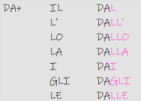
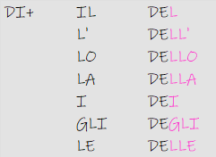
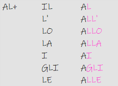
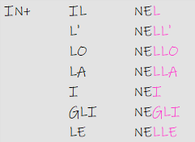
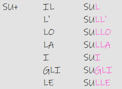

Preposizione articolati
voorzetsels
DA
| italiano | nederlands | preposizione |
|---|---|---|
| Vado dal dottore. | Ik ga naar de dokter. | da |
| Ho ricevuto una cartolina dall' Italia. | Ik kreeg een ansichtkaart uit Italië. | da |
| Il colore è indipendente dallo spessore. | De kleur is onafhankelijk van de dikte. | da |
| Scendo dalla metropolitana. | Ik stap uit de metro. | da |
| A pranzo vado dai miei nonni. | Ik ga lunchen bij mijn grootouders. | da |
| Ma abbiamo imparato molto dagli errori. | Maar we hebben veel geleerd van fouten. | da |
| A cena vado dalle mie amiche. | Ik ga naar mijn vrienden voor het avondeten. | da |
DI

| italiano | nederlands | preposizione |
|---|---|---|
| Scusi, dov'è il parcheggio del ristorante? | Pardon, waar is de parkeerplaats van het restaurant? | di |
| Dov'è l'entrata dell' albergo? | Waar is de hotelingang? | di |
| La dimensione economica dello sport | De economische dimensie van sport | di |
| Qesta borsa è della mia amica Eva. | Deze tas is van mijn vriendin Eva. | di |
| Questa è l'auto dei miei genitori. | Dit is de auto van mijn ouders. | di |
| Il passaporto è degli zii di Lucia. | Het paspoort is van Lucia's ooms. | di |
| La riforma delle pensioni | De pensioenhervorming | di |
AL

| italiano | nederlands | preposizione |
|---|---|---|
| Per fare la spesa vado al supermercato. | Om boodschappen te doen ga ik naar de supermarkt. | al |
| Pranzo sempre all' una. | ik lunch altijd om één uur. | al |
| Prestiamo alta attenzione allo sviluppo di nuovo stile dei prodotti. | We besteden veel aandacht aan de ontwikkeling van nieuwe stijlproducten. | al |
| Domani mattina devo andare alla stazione. | Morgenochtend moet ik naar het station. | al |
| Mi piace il risotto ai funghi. | Ik hou van paddenstoelenrisotto. | al |
| Ho comprato una crema agli asparagi. | Ik heb een aspergecrème gekocht. | al |
| Dalle scarpe alle forniture per auto e dalla vernice alle scorte scolastiche. | Van schoenen tot autospullen en van verf tot schoolspullen. | al |
IN

| italiano | nederlands | preposizione |
|---|---|---|
| Nel mio giardino ci sono tanti fiori e piante. | In mijn tuin staan veel bloemen en planten. | in |
| I vestiti sono nell' armadio. | De kleren liggen in de kast. | in |
| Piccoli raggruppamenti sparsi nel mondo nello stesso istante. | Kleine groepen verspreidden zich op hetzelfde moment over de hele wereld. | in |
| Il portafoglio è nella borsa. | De portemonnee zit in de tas. | in |
| Ci sono nei mercati e nei supermercati, gustosi oggetti in vendita. | Er zijn op markten en supermarkten lekkere dingen te koop. | in |
| Un mio amico vive negli Stati Uniti. | Een vriend van mij woont in de VS. | in |
| Ci sono tanti turisti nelle città italiane. | Er zijn veel toeristen in Italiaanse steden. | in |
SU

| italiano | nederlands | preposizione |
|---|---|---|
| La bottiglia è sul tavolo. | De fles staat op tafel. | su |
| Il gatto è sull'albero. | De kat zit in de boom. | su |
| Vorrei aggiungere qualcosa sullo sport nella scuola. | Ik wil nog iets toevoegen over sport op school. | su |
| C'è un ragno sulla tua maglietta! | Er zit een spin op je shirt! | su |
| Ho comprato un libro sui poeti italiani. | Ik kocht een boek over Italiaanse dichters. | su |
| C'è una macchia sugli stivali. | Er zit een vlek op de laarzen. | su |
| Vado in vacanza sulle Alpi. | Ik ga op vakantie naar de Alpen. | su |